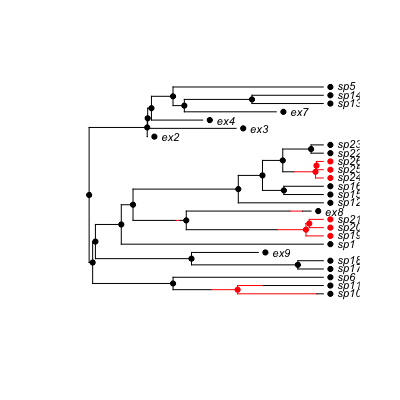
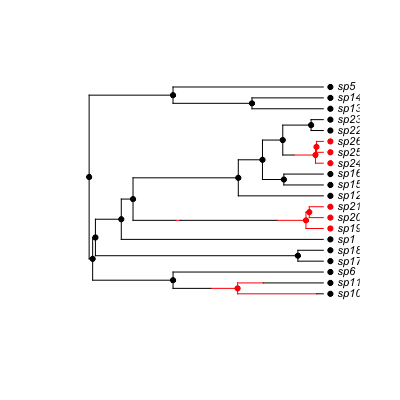

"plot"(x, phy, cols=seq_along(states), states=x$states, xlim=NULL, ylim=NULL, show.tip.label=TRUE, show.node.label=FALSE, show.tip.state=TRUE, show.node.state=TRUE, no.margin=FALSE, cex=1, font=3, srt=0, adj=0, label.offset=NA, lwd=1, ...)
history.discrete containing a
discrete character history. This could be made by
history.from.sim.discrete.par).adjustment (see par).Both stochastic character mapping and simulation may create character histories. This function plots these histories
This attempts to be as compatible with ape's plotting functions
as possible, but currently implements only right-facing cladegrams.
## Simulate a tree, but retain extinct species. pars <- c(.1, .2, .03, .04, 0.05, 0.1) # BiSSE pars set.seed(2) phy <- tree.bisse(pars, 20, x0=0, include.extinct=TRUE) ## Create a 'history' from the information produced by the simulation ## and plot this h <- history.from.sim.discrete(phy, 0:1) plot(h, phy, cex=.7)
## Prune the extinct taxa. phy2 <- prune(phy) ## The history must be recreated for this pruned tree: h2 <- history.from.sim.discrete(phy2, 0:1) plot(h2, phy2, cex=.7)